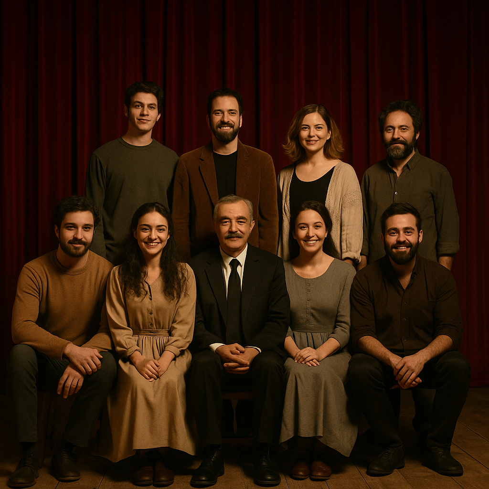

Biz Kimiz?
Tiyatro Işıkları, 2012 yılında amatör ruhla yola çıkan bir grup tiyatro aşığının kurduğu, bugün ise profesyonel sahnelere adım atan bir sanat topluluğudur.
Sahne ışıkları altında hayat bulan hikayeleri sizlerle buluşturmak için yola çıktık. Her oyunumuzda yeni duygular, yeni deneyimler sunmayı amaçlıyoruz.
Misyonumuz; tiyatroyu her yaştan insanla buluşturmak, sahnenin büyüsünü herkesin hissedebileceği bir deneyime dönüştürmektir.
